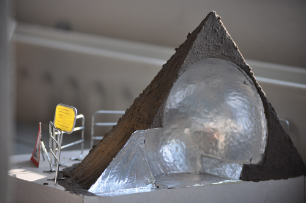

The Non-place Bus Stop
The assignment was to design a bus stop. Before the assignment we had a discussion about the concept of a bus stop.
For this assignment Marjolein Frishert and I teamed up to design the bus stop. The bus stop we designed was inspired by the idea that a bus stop is a kind
of non-place. The focus of your attention will be at your destination, not at the bus stop. We wanted to stimulate that mindset.
The inside of the bus stop is a mirroring sphere, distorting your sense of space because it does not offer reference points. It allows your mind to wander
and be elsewhere. The entrance will point in the direction of the approach of the bus so this is all you can focus on. To emphasise the non-place the
outside of the bus stop is made to look like a temporary construction site. This is a place in an in-between stage just like your trip is when you are at the bus stop.